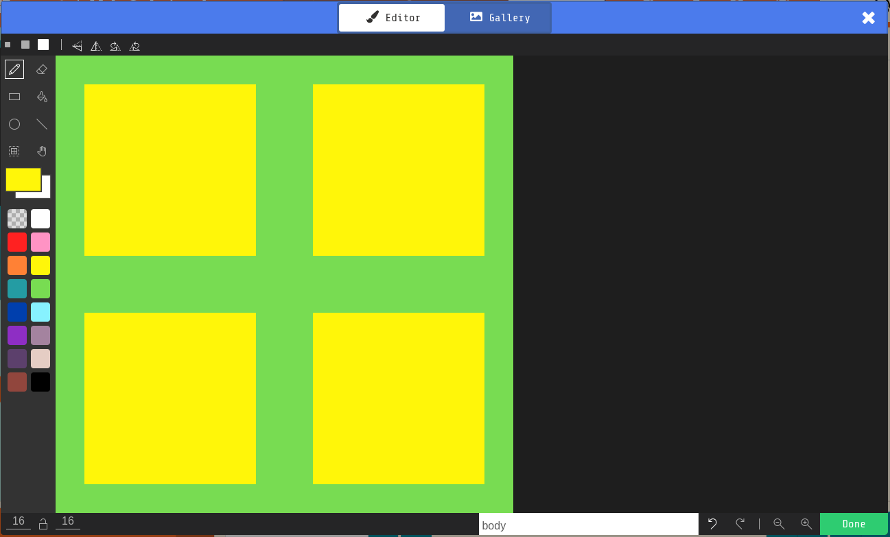
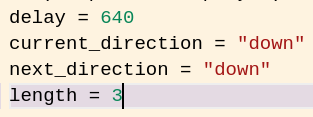
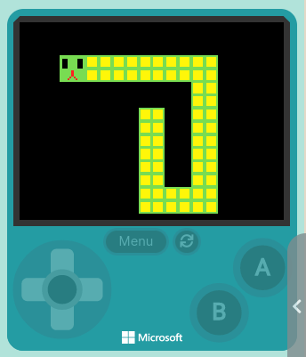
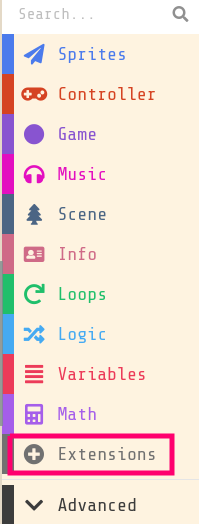
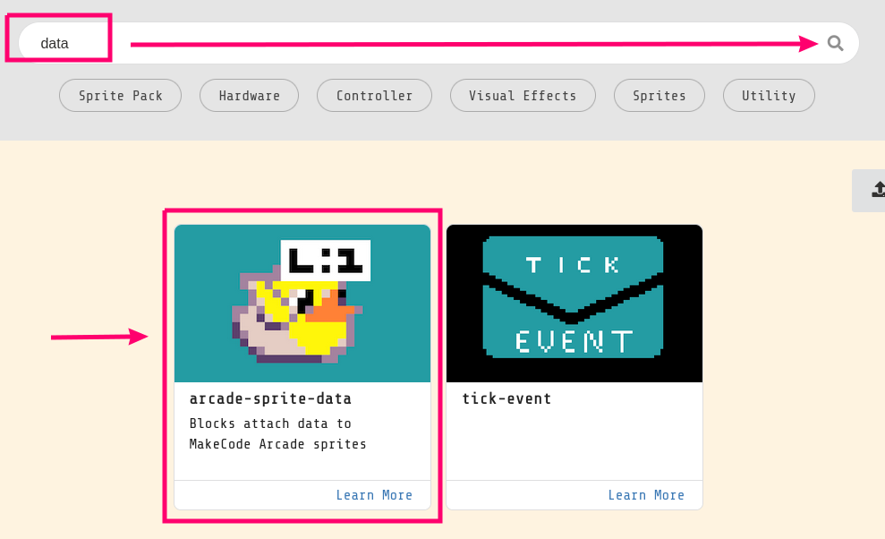
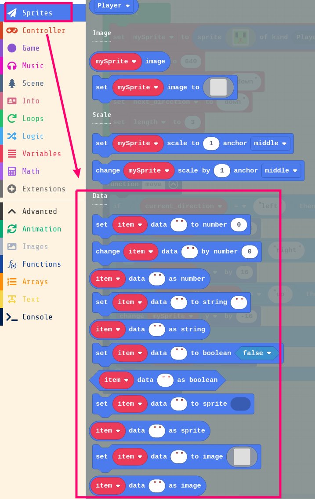

To begin, let’s draw a body image for our snake.
Assets -> New -> Image
Here’s what I am doing for mine:

Be sure to give it a name, body, and save it with done.
We need our snake to be of a certain length. Let’s create a variable that our snakes length. Let’s see how to do this in python instead of Blocks. Find where your other variables are located, and add one for length:

That is much quicker than blocks!
What does length=3 mean. It means your snake is going to have 3 body segments following it around.
A lot of game programming is like performing a magic trick. It would be a lot of work to create a series of segments and have them follow us one after another. An easier thing to do would be to spawn a body segment where we are, and once we have moved 3 tiles, to despawn it. Once we become a length 4 snake, they will only get despawned after moving 4 tiles, etc.
So we have a number of challenges to solve:
- How do we create new segments
- We’ll need to do this right before we move
- How do we keep track of all of these segments
- We’ll use an array for this
- How do we keep track of how old a segment is
- We’ll use a data variable attached to the sprite for this, like one might use for HP in a game
- How do we destory segments
- Once their age is zero, we will have to despawn them.
This is how software engineering is done - analyze a big problem, break it down into little pieces, and solve them one by one. Let’s start by spawning in pieces after we move. We’ll create a new function for this called grow. Let’s do it right in python:
def grow():
tail_segment = sprites.create(assets.image("""
body
"""), SpriteKind.enemy)
tail_segment.set_position(mySprite.x, mySprite.y),
Let’s also make sure we are calling this function right before we move. Find your on_forever function and add to it:
def on_forever():
pause(delay)
grow()
move()
turn()
forever(on_forever)
When you test your game now, you should have an infinitely growing snake:

We do have a problem though, and that is that we have a (theoretically) infinite number of sprites being added with no way to keep track of them all. It wouldn’t make sense to name every single one something unique (like body_1, body_2, body_400, etc.), so instead we will use an array, which is like a list of variables, in this case, sprites.
First we create an empty array with the rest of our variable initializations:
...
current_direction = "down"
next_direction = "down"
length = 3
tail_segments: List[Sprite] = []
...
and then whenever we create a new piece, we need to add it to the list:
def grow():
global tail_segments
tail_segment = sprites.create(assets.image("""
body
"""), SpriteKind.enemy)
tail_segment.set_position(mySprite.x, mySprite.y)
tail_segments.append(tail_segment)
Cool, now we won’t lose any of our segments, because they will all be in the list.
The next thing we want our snake segments to age and dissapear over time. We will need an extension for this. Click on extensions:

Type in data, and check out the extension called arcade-sprite-data

You will know that it is properly installed because there will now be a Data section under sprite:

Let’s head back to python:
Update your grow() function as follows:
def grow():
global tail_segments
global length
tail_segment = sprites.create(assets.image("""
body
"""), SpriteKind.enemy)
tail_segment.set_position(mySprite.x, mySprite.y)
tail_segments.append(tail_segment)
sprites.set_data_number(tail_segment, "ticks_remaining", length)
We have just create a new variable that will always live with that tail segment. It is called ticks_remaining and it is set to 3, which is our current length.
The next thing we need to do is age our tail segments. We can actually do this at the starting of the function we are on right now:
def grow():
global tail_segments
global length
for current_segment in tail_segments:
sprites.change_data_number_by(current_segment, "ticks_remaining", -1)
tail_segment = sprites.create(assets.image("""
body
"""), SpriteKind.enemy)
tail_segment.set_position(mySprite.x, mySprite.y)
tail_segments.append(tail_segment)
sprites.set_data_number(tail_segment, "ticks_remaining", length)
In this code we are looping over the tail_segments, and for each we are decreasing the ticks_remaining by one.
Finally, once the age reaches ticks_remaining, we want to destory this piece of the tail. Here is the final complete version of the grow() function:
def grow():
global tail_segments
global length
for current_segment in tail_segments:
sprites.change_data_number_by(current_segment, "ticks_remaining", -1)
if sprites.read_data_number(current_segment, "ticks_remaining") == 0:
sprites.destroy(current_segment)
tail_segment = sprites.create(assets.image("""
body
"""), SpriteKind.enemy)
tail_segment.set_position(mySprite.x, mySprite.y)
tail_segments.append(tail_segment)
sprites.set_data_number(tail_segment, "ticks_remaining", length)
However, currently there are no limits on how far your snake can move.
Let’s use some conditional logic next to make sure the snake stays in bounds